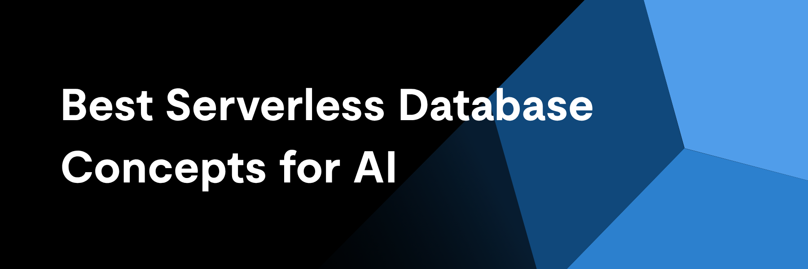
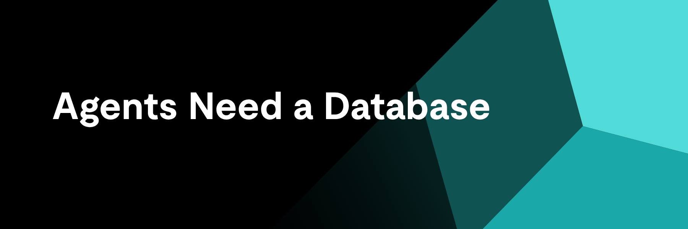
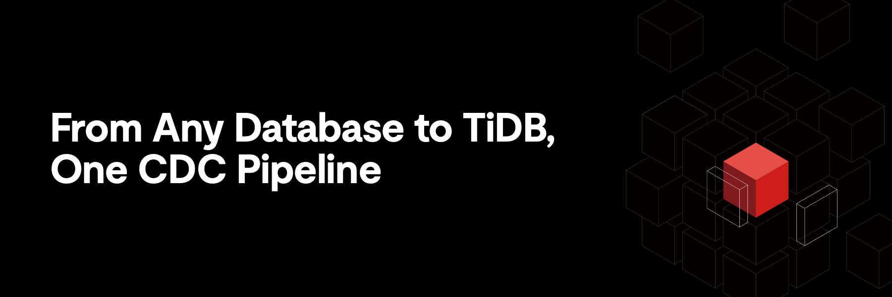
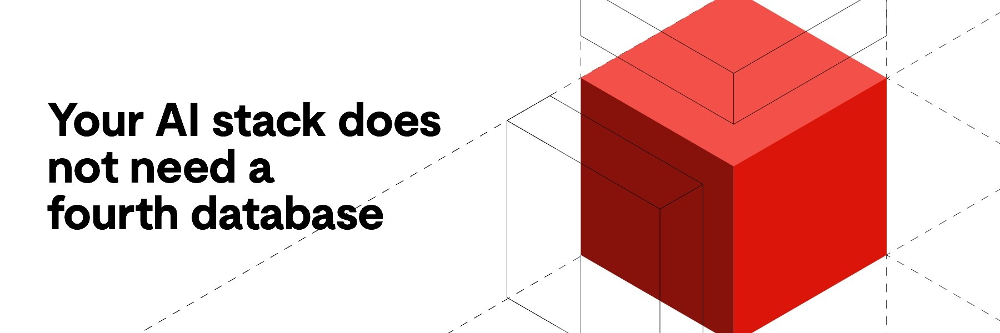

完整Agent状态栈：内存、文件与Serverless数据库持久化
DataHot 速览
TiDB博客文章指出，AI应用需要四种持久化层：Agent记忆、生成文件、操作状态和检索数据。无服务器数据库能自动扩缩容、按用量计费并支持缩容到零，适合突发流量。文章建议评估引擎而非标签，重点关注连接行为和冷启动，并认为分散的技术栈会累积问题，单一引擎可消除系统边界和一致性缺陷。
为什么值得关注：数据库从业者可借此理解AI应用对数据持久化的新需求，以及Serverless数据库在Agent场景中的适配逻辑。
译文
AI 逐段翻译
关键要点
- 无服务器数据库可扩展至零，并按使用量计费，匹配突发性代理流量。
- AI应用需要四个持久化层：内存、文件、操作状态和检索数据。
- 评估引擎而非标签。连接行为和冷启动最为重要。
- 碎片化堆栈累积。一个引擎消除系统边界和一致性错误。
无服务器数据库是一种完全托管的数据库，可根据需求自动扩展计算和存储，无需预置服务器或容量规划，且仅按实际使用计费，空闲时可扩展到零。提供商负责基础设施；你负责数据。
该定义涵盖了该类别。但并未涵盖2026年大多数团队实际面临的问题：AI应用不仅需要数据库，还需要为整个状态栈提供持久化，包括代理记忆、生成的文件、操作数据和检索索引。通用云数据库解决一层问题，其余留给胶水代码。
本指南面向从演示转向生产的软件架构师、平台工程师和AI构建者。目标是解释什么是无服务器数据库，为什么该模型特别适合AI工作负载，以及如何根据完整的代理状态栈（内存、文件、SQL状态和向量检索）评估数据库，而不是孤立地针对单一工作负载。
什么是无服务器数据库，为什么它现在很重要？
无服务器数据库完全抽象了机器。你无需选择实例大小、预置副本或预测容量。你连接、读取和写入；平台在后台分配计算资源，并按你的消费量收费。
定义该类别的核心特征包括：
- 托管运维：修补、复制、故障转移和备份是提供商的工作。
- 弹性计算：容量随负载扩展和收缩，无需人工干预。
- 扩展到零：空闲期间计算挂起，因此你不再为沉默付费。
- 基于使用的经济性：计费跟踪请求、存储和计算消耗，而非预留容量。
现代无服务器架构通常将计算与存储解耦：数据存放在持久的共享存储层中，而无状态计算节点按需启动。这种分离使得弹性扩展和扩展到零成为可能，而不会危及数据本身。
这个概念现在更重要，因为AI原生和事件驱动应用正好具有无服务器设计的流量特征：不可预测的突发、长时间空闲以及没有可靠的基线可供预置。为100倍峰值然后休眠的工作负载预留固定容量，是云账单出错的原因。
为什么该术语仍被误解
“无服务器”并不意味着无需服务器。服务器存在；只是你从未见过。该术语描述的是运营契约，而非架构图：提供商拥有基础设施决策，你仅通过数据库协议交互。团队有时会认为“无服务器”意味着有限、玩具级系统。并非如此。分布式SQL数据库可以以无服务器方式运行；部署模型和引擎能力是独立的问题。
为什么无服务器数据库适合AI状态的现实
AI应用产生了特定的持久化问题，首先是流量形状。代理工作负载是突发性的：用户启动任务，代理在几秒内分支为数十个工具调用，然后静默数小时。开发环境整夜闲置，测试时爆炸。预置数据库迫使你全天候为峰值付费；无服务器持久化只为突发付费，其余不收费。
问题的另一半是什么需要持久化。称之为AI状态：AI应用或代理必须保留的结构化操作数据，以在会话间保持有用和一致。包括对话历史、用户偏好、工具输出、中间结果、任务状态和租户元数据。
以下是状态未正确持久化时的崩溃方式。支持代理解决客户的运输问题，将上下文保存在提示窗口和本地缓存中。会话结束，容器回收，缓存消失。客户第二天回来，代理将其视为陌生人，重新询问已回答的问题。没有崩溃，但产品失败了，因为状态驻留在临时层而不是持久的数据库中。
会话状态、工具输出和内存不是一回事
这三者经常被混淆。会话状态是实时交互的工作上下文：代理当前正在做什么。工具输出是代理所做的事情的记录：API响应、查询结果和值得审计的文件操作。内存是应该在会话间存续的内容：提炼的偏好、摘要和事实。它们具有不同的生命周期、访问模式和一致性要求。将它们视为一个整体是大多数原型犯的第一个架构错误。
为什么突发性代理工作负载奖励弹性持久化
单个代理任务可以在短时间内触发数十次读取和写入：获取内存、记录工具调用、更新任务状态、写入结果。乘以并发用户，负载曲线看起来就像地震仪。弹性计算吸收峰值；扩展到零吸收静默。无服务器经济几乎与代理的实际行为一一对应。
完整代理状态栈中应该包含什么？
当团队为AI应用规划持久化时，他们通常计划一两层，然后在生产中发现其他层。完整的代理状态栈有四个：
| 层 | 存储内容 | 重要性 | 若忽略常见故障 |
|---|---|---|---|
| 内存 | 用户偏好、对话摘要、提炼的事实 | 跨会话连续性；代理“了解”用户 | 代理重复询问已答问题；用户失去信任 |
| 文件 | 生成的文档、代码工件、工作区文件 | 代理越来越多地将文件作为工作产品生成和使用 | 会话之间工件消失；工作无法恢复 |
| 运行状态 | 任务状态、工具调用历史、租户元数据、审计记录 | 活动应用逻辑的正确性、可调试性和合规性 | 没有审计追踪；智能体操作重复或矛盾 |
| 检索数据 | 文档和记忆的嵌入与索引 | 对智能体所知内容的语义搜索 | 检索与源数据不同步 |
表1：智能体状态栈的四层及每层范围不足时会出现的问题。
原型对这些层范围不足是有原因的：演示不需要它们。单会话智能体配上单个用户，可以把一切保持在上下文和临时目录中。只有会话增多、用户回归、有人问“上周二智能体为什么那样做？”时，这些缺口才会显现。
用于偏好、摘要和连续性的记忆
记忆是用户感受最直接的层。它很少是原始转录，而是提炼后的：“喜欢简洁的回答”，“在柏林时区工作”，“最近三个项目涉及计费服务”。好的记忆设计将这些存储为结构化、可查询、有来源的记录，而不是不断增长、附加到每次提示的文本文件。
用于智能体工作流的文件和工件
编程智能体生成代码仓库。研究智能体生成报告。自动化智能体生成电子表格和配置。这些工件是实际工作成果，需要持久、版本化的存储，并与应用其余部分使用相同的身份和租户模型关联，而不是孤立的、与生成数据无关的对象存储桶。
用于活动应用逻辑的结构化状态和检索数据
运行状态是正确性所在：哪些任务在运行、哪些工具调用成功、哪个租户拥有哪条记录。这是事务性领域：智能体重复执行支付或中途丢失任务，是生产事故，而非怪癖。检索数据与之并列：使记忆和文档能按含义搜索的向量嵌入，理想情况下不脱离同一引擎。
AI应用应如何随时间持久化记忆、文件和状态？
组织原则是区分热上下文与持久存储。热上下文是当前模型窗口内能容纳的内容，对每个请求临时组装。持久存储是应用所有不能丢失的东西：聊天记录、用户偏好、摘要、工具调用历史、生成文件、工作流定义、租户元数据，以及排列这些的所有时间戳。上下文窗口是缓存；数据库是真相。
不同类型的状态也有不同的检索模式。偏好是按用户ID精确查找。记忆搜索是语义的：“我们对这个客户的部署了解多少？”任务状态是事务性的读-修改-写。文件通过引用流式访问。错误不在于认识到这些差异，而在于让每种模式各自独立系统，直到架构成为五个互相矛盾的存储联合体。
工作上下文与持久状态
提示中的一切应能从数据库重建。如果失去上下文窗口就永久丢失信息，那信息就放错了地方。这一规则能在原型期捕获大多数持久化缺陷，使其不进入生产。
可搜索记忆与精确事务数据
语义搜索找到相关记忆；但绝不应是回答“这笔支付成功了吗？”的机制。精确状态需要具有事务一致性的精确查询。将一切路由到向量存储的架构最终会近似本应确定的事实。一个AI智能体记忆数据库需要对同一数据同时具备两种检索模式。
为什么文件需要自己的持久化策略
文件体积大、版本化、按引用访问而非查询。务实模式是在数据库中存储文件元数据、所有权和血缘（与运行状态一起事务性地存储），而内容则存放在为对象而建的存储中。关键是两者保持关联：无法追踪到创建它的任务和租户的文件是责任，不是工件。
什么成就智能体应用的最佳无服务器数据库？
没有单一赢家；诚实的答案是按工作负载加权的评估标准集合。对于智能体应用，六个标准反复出现：
- 连接模型：智能体打开许多短连接；数据库需要承受这种模式，而无需连接池辅助项目。
- 冷启动特征：挂起计算唤醒有多快，第一个查询会付出可见代价吗？
- 结构化状态支持：完整SQL和ACID事务，还是保障较弱的文档模型？
- 向量支持：原生向量类型和索引，还是迫使引入第二系统的附加组件？
- 治理：应用变为多用户时的租户隔离、访问控制和审计能力。
- 生态兼容性：它是否说着你的ORM、框架和智能体SDK已经理解的协议？
正确的权重取决于应用。对于没有事务逻辑的单用户工具，轻量文档存储可能就够。一旦应用需要SQL一致性、多租户隔离或带元数据过滤的检索，标准就提高了。
连接行为比多数团队预期的更重要
无服务器函数和智能体运行时造成连接风暴：突发期间数百个瞬态客户端同时连接。为固定长连接池设计的数据库先在这里倒下。优先评估连接多路复用；这是团队在生产中发现的失败模式，而非演示中。
Moonshot AI团队在Kimi智能体平台展示了曲线末端的情况。每个租户站点都有自己的数据库，这使得引擎的连接和唤醒行为与产品体验无法区分。团队报告称，在单个TiDB集群上运行数千万个并发租户站点，且预配时间低于一秒，数据基础设施成本降低了一个数量级，同时对代理来说更重要的是：无需回收、无休眠暂停、无会话中断。从代理的视角来看，数据库始终就在那里。
这是在评估中值得测试的区别。许多平台都打着无服务器的标签，但很少有平台能为每个租户维持这种行为。当空闲租户被回收或休眠时，唤醒代价恰好落在代理依赖的长尾会话上，而分层的服务级别就变成了分层的用户体验。
结构化数据、向量和检索不应各自分离
当嵌入存储在一个系统中，源记录存储在另一个系统中时，每次写入都成为同步问题。删除的文档残留在索引中；更新的记录返回过时的搜索结果。将用于AI应用的向量搜索与它所描述的结构化数据放在同一引擎中，消除了整类一致性错误，这是选择最佳AI应用向量数据库时的关键标准。用于AI应用的向量搜索与它所描述的结构化数据放在同一引擎中，消除了整类一致性错误，这是选择最佳AI应用向量数据库时的关键标准。最佳AI应用向量数据库。
为什么开放标准降低迁移和锁定风险
一个说标准协议（如通过MySQL wire协议的SQL）的无服务器数据库，可以保持较低的退出成本并拥有庞大的工具生态系统。专有API在价格变化、出现限制或需求超出平台之前都没问题。开放标准将重写转化为迁移。
AI应用的无服务器持久化有哪些权衡？
无服务器持久化并非没有权衡，如实评估这些权衡是做出正确选择的一部分。
反复出现的缺点：冷启动为闲置后的第一个请求增加延迟。连接风暴可能在计算限制之前就触及提供商限制。按使用量计费使得失控的代理在没有护栏的情况下变成失控的账单。提供商配额（请求大小、连接数、存储上限）以预留容量不会的方式限制设计。并且，将文件、向量和SQL状态混合在独立的Serverless产品中，会将这些问题的数量乘以所涉及的系统数。
一个通用的Serverless数据库可以完美适配普通Web工作负载，但可能仍然无法满足代理系统，通常是因为它覆盖了操作状态层，而将内存、文件和检索留给了其他服务。类别标签告诉你计费模式，而不是引擎是否覆盖你的状态栈。
冷启动和唤醒代价
缩放到零意味着空闲后的第一个查询可能需要等待计算资源恢复。对于交互式代理，请根据用户体验预算评估唤醒延迟，并检查平台是否可以为延迟敏感路径保持温暖池。
代理展开操作时的成本控制
一个有缺陷的代理循环可以无限期地每分钟发出数千个查询。按使用量计费使其迅速变得昂贵。支出上限、每租户配额以及监控哪个代理产生了哪种负载是硬性要求，而非可有可无。
跨太多持久化层的操作蔓延
每增加一个持久化系统，就意味着一套新的凭据、一种新的故障模式、一个同步作业以及账单上的一行。对任何单个Serverless产品的权衡分析都应包括它迫使你并行运行的系统。
随着技术栈增长，没有TiDB构建的情况
考虑一个从原型开始的支持代理：一位开发人员，一个用于聊天日志的文档存储，本地磁盘上的文件，以及包含其他所有内容的提示。它运行良好，所以它增长了。记忆需要语义搜索，于是向量数据库加入技术栈。文件需要在部署中幸存，于是对象存储带着跟踪所有权的小型服务出现了。任务状态需要事务，于是关系数据库出现。多租户落地，现在四个系统每个都需要自己的隔离模型。
此时团队维护着一个记忆服务、一个文件层、一个向量存储和一个事务数据库，外加协调它们的胶水代码。每个新功能都涉及多个系统。每个一致性错误都变成分布式系统调查。没有人计划这种架构；它是自然增长的。
大多数团队起步时的拼接式状态栈
上述模式是就地解决每个出现的持久性问题的默认结果。每个单独的选择都是合理的。总和是一个比产品增长更快的操作表面积，以及一个代理的记忆、文件和状态可能悄悄不一致的数据模型。
使用TiDB实现持久代理数据的更简单路径
另一种选择是减少系统边界：在同一个分布式SQL引擎中，使用你的团队已经了解的SQL查询结构化状态、记忆记录、向量索引和文件元数据。租户是一个模型，而不是四个。一致性是事务，而不是同步管道。达到生产环境的架构看起来就像设计文档中的那样。
TiDB如何适配完整的Serverless数据库和AI状态故事
TiDB是一个分布式SQL数据库，兼容MySQL协议，引擎内建向量搜索，并采用可缩放到零的Serverless部署模型。这四个属性直接映射到代理状态栈：用于操作状态的ACID事务、用于记忆和文档检索的向量索引、用于记忆记录和文件元数据的持久结构化存储，以及用于突发性代理流量的弹性Serverless经济性。
设计目标是单一基础，而非联邦。代理记忆以带有嵌入的可查询行形式持久化；一条SQL语句即可按租户过滤、与任务历史连接，并按向量相似度排序。文件和工件与同一租户和血缘模型关联。作为AI数据库基础设施，重点不在于TiDB能做所有事情，而在于必须相互一致的AI状态层位于同一个一致性域中。
| 需求 | 碎片化堆栈方法 | TiDB中心方法 |
|---|---|---|
| 代理记忆 | 独立记忆服务+向量数据库，通过管道同步 | 单个引擎中带有向量索引的记忆行 |
| 语义检索 | 独立向量存储，与源数据脱节 | 对实时事务数据进行向量搜索 |
| 运行状态 | 关系数据库与其他存储并存 | 原生分布式ACID事务 |
| 文件工件 | 对象存储，所有权未追踪 | 文件元数据和血缘与应用程序状态保持事务性 |
| 多租户 | 每个系统重新实现隔离 | 跨状态、记忆和检索的统一隔离模型 |
| 弹性扩展 | 每个系统独立扩展（和计费） | 无服务器计算可扩展到零，单一账单 |
表2：持久化需求在碎片化堆栈与TiDB中心架构中的解决方式。
这种整合逻辑并不止于数据库。代理处理文件和处理行一样频繁，然而这两个表面通常通过不相关的接口访问：SQL用于状态，对象存储API用于工件，应用代码用于使两者保持一致。TiDB正在构建的方向是单一访问协议，通过一个接口呈现数据库和文件系统，使代理以相同方式处理其状态和工作文件，在相同的租户和血缘模型下。
用于实时状态和持久记忆的分布式无服务器数据库
由于TiDB将计算与存储解耦并同时分布式化，无服务器层可吸收代理突发流量而无需固定容量上限，而存储层在扩展事件中保持状态持久。计算在空闲开发时段挂起，并按需恢复，使其成为动态工作负载的无服务器数据库，并提供免费层起步。
SQL状态、搜索和AI应用增长的单一基础
实际好处随时间显现：原本需要跨越三个系统的功能变成了模式变更。生产证据指向同一方向：Manus在TiDB上运行超过一百万个数据库租户，Kimi的代理平台在单个集群上运行数千万并发租户站点，Atlassian将750多个Postgres集群整合为16个TiDB集群。整合是常态，而非例外。
TiDB如何帮助AI团队从原型转向生产
AI演示与AI产品之间的差距主要是持久化差距。演示容忍状态丢失；产品则不然。早期规划完整代理状态栈（记忆、文件、运行状态、检索）的团队避免了重写，否则重写会在最糟糕的时刻到来，即使用量增长时。
这些决策之下还有一个未决问题：企业AI栈中应有多少是开放的。开放权重模型发布已将其从哲学辩论变成采购问题，而这个问题现在延伸到模型下方的数据层。TiDB的答案是其历史。它是一个开源分布式SQL数据库，使用MySQL协议，这就是为什么它能融入现有工具链而非要求团队采用专有接口。对于可能随时间更换模型的代理框架，开放状态层使持久化决策独立于模型决策。
构建在分布式无服务器数据库上，一个引擎覆盖整个栈意味着需要运维的系统边界更少，架构和计费方面的蔓延更低，以及从原型到受治理的多租户生产的更清晰路径。如果您正在为AI应用评估长期持久化，TiDB Cloud的无服务器层是测试架构与真实工作负载的低摩擦场所。
王帆是TiDB的工程与AI增长副总裁，领导公司AI和无服务器产品组合的团队。他拥有超过16年构建分布式数据系统的经验，并直接与在TiDB上运行代理工作负载的AI原生团队合作。
本指南借鉴了TiDB内部研究、已发布的TiDB客户案例研究以及对当前无服务器数据库架构的分析。引用的产品功能反映了截至2026年8月的TiDB Cloud；读者应在TiDB Cloud文档中确认当前层级详情。
无服务器数据库常见问题
什么是无服务器数据库（简单来说）？
无服务器数据库是由提供商管理所有基础设施的数据库。您无需配置服务器或规划容量。计算随需求自动扩展，空闲时可完全挂起，并且您按实际使用量付费，而非为预留机器付费。
为什么AI应用需要的不只是向量存储？
向量存储处理语义检索，通过含义查找相关内容。但AI应用还需要精确的事务状态（任务状态、租户记录）、带有来源的持久记忆以及文件持久化。向量存储是近似的；生产状态必须精确。
AI应用应在会话之间持久化什么？
聊天日志和摘要、用户偏好、工具调用历史及其输出、生成的文件、任务和工作流状态、租户元数据，以及所有这些之上的检索索引，并带有时间戳，以便事件能够被排序和审计。
什么最适合代理应用的无服务器数据库？
这取决于工作负载形状。评估突发流量下的连接处理、冷启动延迟、对运行状态的SQL和ACID支持、原生向量搜索、租户隔离以及与工具链的协议兼容性，然后根据您应用程序的实际需求权衡这些因素。
无服务器数据库能否处理生产级AI工作负载？
是的，如果底层引擎是生产级的。判断架构，而不是标签：持久性保证、经过测试的规模、治理功能和一致性模型。无服务器描述的是运营和计费合同，而不是能力上限。
使用25 GiB免费资源启动数据库。
相关资源

为什么代理型AI架构需要数据库，而不仅仅是向量存储

使用Debezium CDC将实时数据迁移到TiDB

向量搜索遇见分布式SQL：为什么代理型AI不需要另一个数据库
为什么代理型AI架构需要数据库，而不仅仅是向量存储
使用Debezium CDC将实时数据迁移到TiDB
向量搜索遇见分布式SQL：为什么代理型AI不需要另一个数据库
有问题吗？让我们知道如何帮助您。
TiDB Cloud Dedicated
适用于可预测工作负载的完全托管云DBaaS
TiDB Cloud Starter
适用于自动扩展工作负载的完全托管云DBaaS